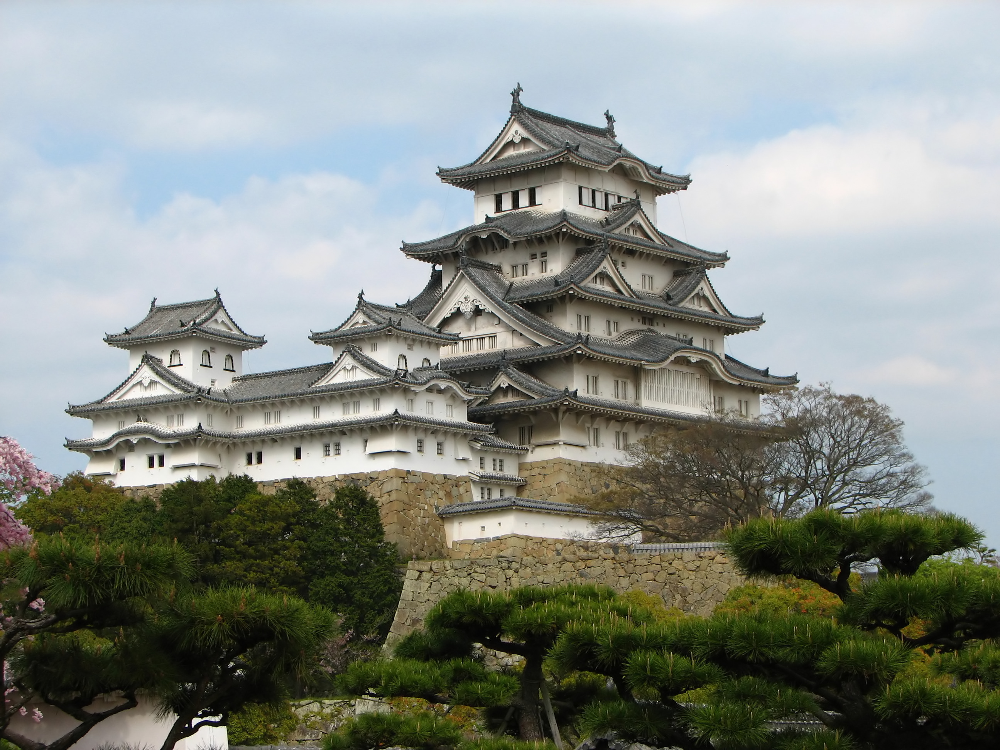
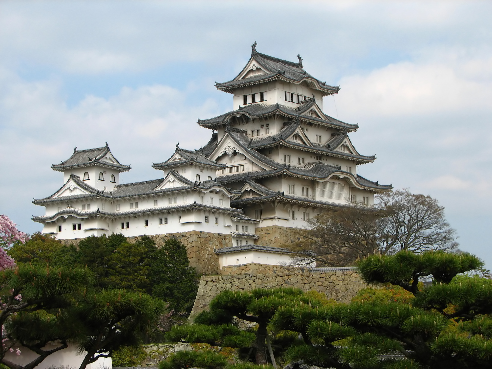
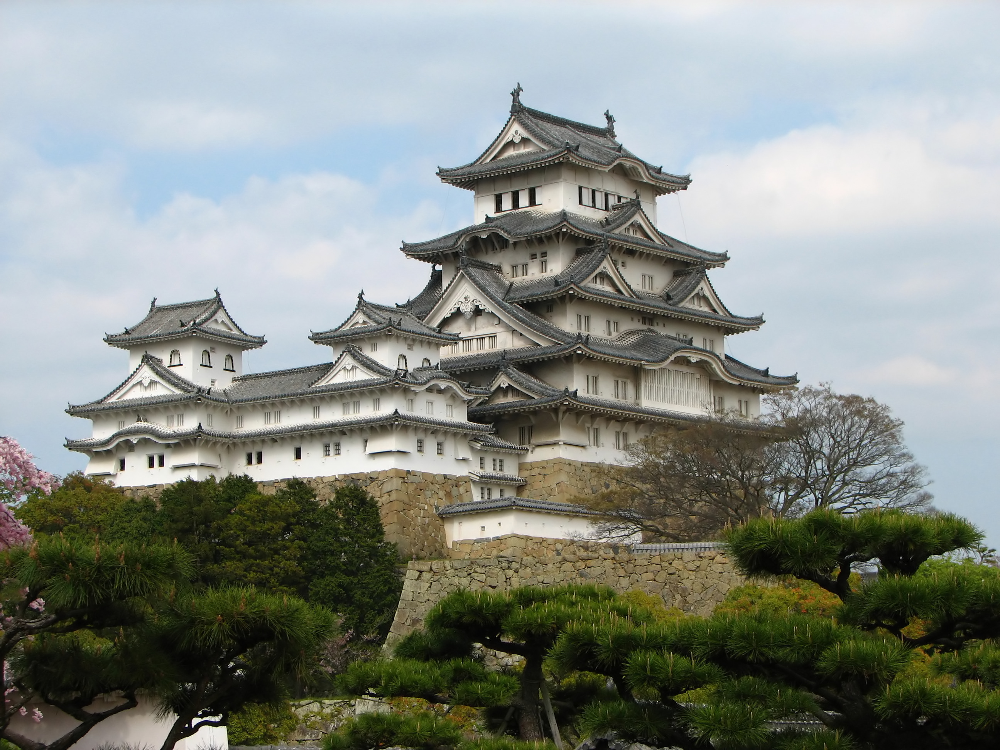

Photo 1
Photo 2
Photo 3
By Jakub Hałun (Own work) [
GFDL
or
CC BY-SA 4.0-3.0-2.5-2.0-1.0
],
via Wikimedia Commons
By Fortew F (Own work) [
CC BY-SA 3.0
],
via Wikimedia Commons

By Bernard Gagnon (Own work) [
GFDL
or
CC BY-SA 3.0
],
via Wikimedia Commons
 By Jakub Hałun (Own work) [GFDL or CC BY-SA 4.0-3.0-2.5-2.0-1.0], via Wikimedia Commons
By Jakub Hałun (Own work) [GFDL or CC BY-SA 4.0-3.0-2.5-2.0-1.0], via Wikimedia Commons
 By Fortew F (Own work) [CC BY-SA 3.0], via Wikimedia Commons

By Bernard Gagnon (Own work) [GFDL or CC BY-SA 3.0], via Wikimedia Commons
By Fortew F (Own work) [CC BY-SA 3.0], via Wikimedia Commons

By Bernard Gagnon (Own work) [GFDL or CC BY-SA 3.0], via Wikimedia Commons